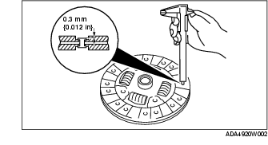

1. Using vernier calipers, measure the thickness of the lining at a rivet head on both sides.

-
• If it is less than the minimum specification, replace the clutch disc.
Clutch disc minimum thickness
-
0.3 mm {0.012 in}
2. Measure the clutch disc runout using a dial indicator.

-
• If it exceeds the maximum specification, replace the clutch disc.
Clutch disc maximum runout
-
0.7 mm {0.028 in}